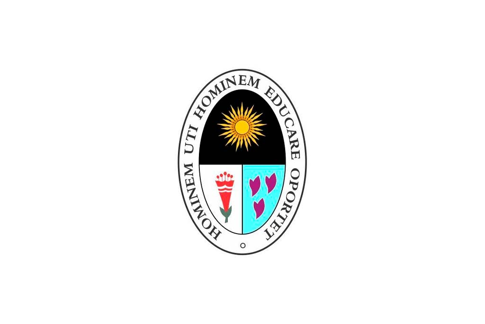
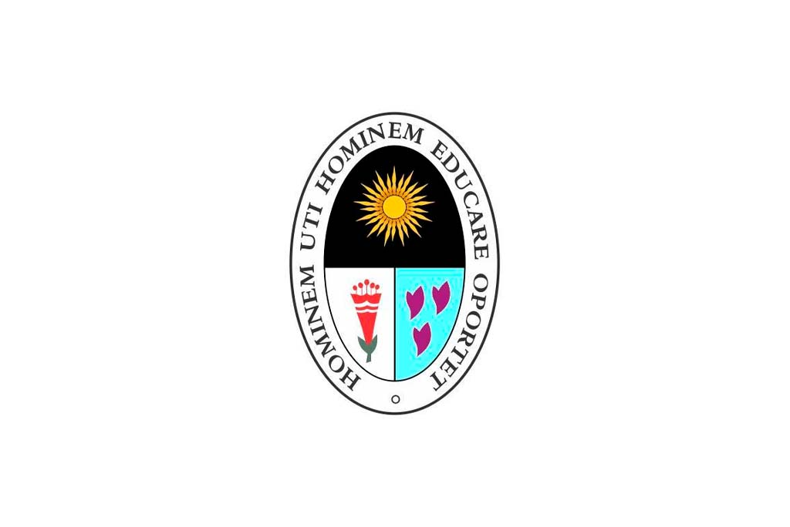

¿Te interesa el mundo del análisis, la economía y la gestión financiera?
La carrera de Contabilidad te permitirá adquirir conocimientos y habilidades para la gestión de información financiera y administrativa de las organizaciones, con el fin de tomar decisiones y cumplir con las obligaciones fiscales y legales.
CONOCER MÁS...El Profesional Técnico en Contabilidad es un especialista capacitado para gestionar y analizar las operaciones económicas y financieras de entidades públicas y privadas. Su formación le permite realizar tareas clave como la planificación, organización y verificación de registros contables, cumpliendo con la legislación vigente y los principios contables.
Contabilidad
3 años
Profesional Técnico En Contabilidad
Bachiller Técnico En Contabilidad
1. Elaboración de estados financieros y reportes contables.
2. Aplicación de normas tributarias y auditoría financiera.
3. Registro y análisis de operaciones contables de entidades públicas y privadas.
• Registro y análisis contable
• Elaboración de estados financiero
• Asesoría tributaria y fiscal


 

 IESTP Lurín
IESTP Lurín